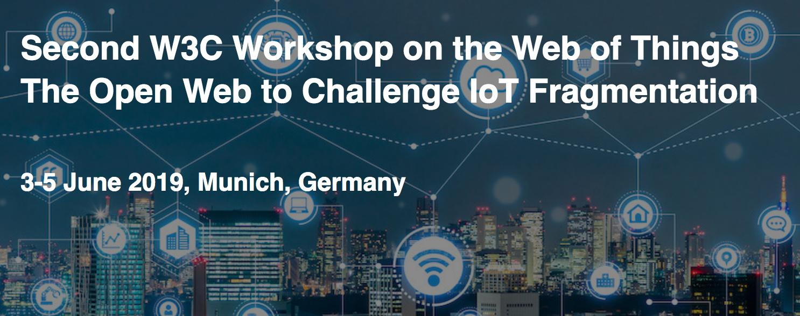
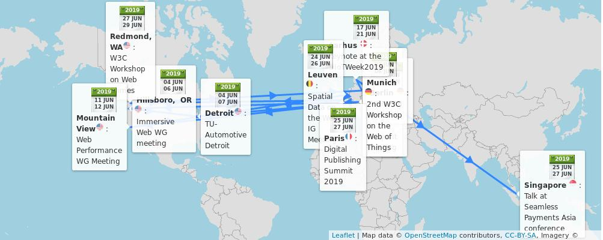
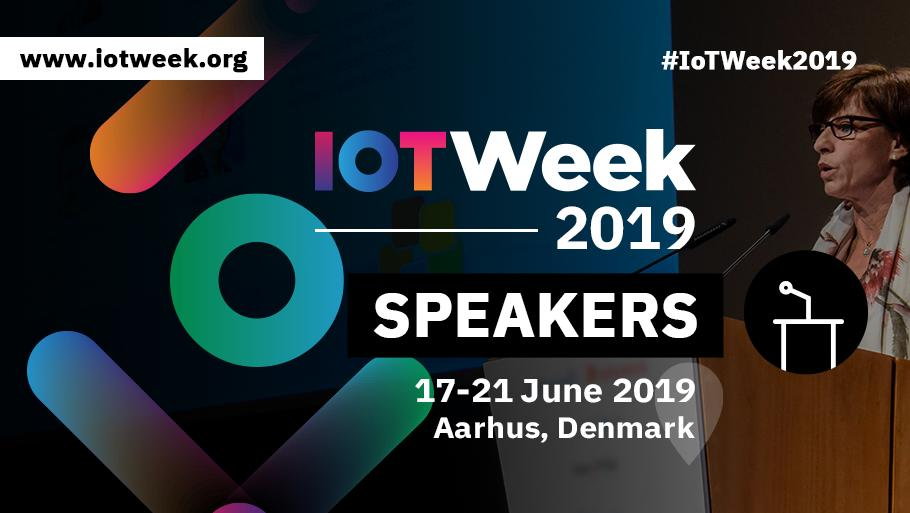
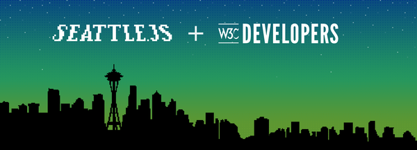

3-5 June: 2nd #W3CWorkshop on the Web of Things, hosted by @siemens in #Munich 🇩🇪 https://www.w3.org/WoT/ws-2019/ #IoT
🗓️ June@w3c: W3C workshops, Working groups' meetings, digipub and payments events, etc. https://www.w3.org/participate/eventscal.html
https://twitter.com/w3cdevs/status/11350850799470223364-5 June: @dontcallmeDOM attends the @MDN product Advisory Board #f2fmeeting in #Berlin 🇩🇪
4-7 June: The @csswg meets in #Toronto 🇨🇦 @mozilla's offices https://wiki.csswg.org/planning/toronto-2019
https://twitter.com/w3cdevs/status/11350850852780318724-5 June: The Immersive Web #Working Group @immersiveWebW3C holds its #f2fmeeting in #Hillsboro 🇺🇸, hosted by @intel. See their agenda: https://github.com/immersive-web/administrivia/blob/master/F2F-Jun-2019/schedule.md
https://twitter.com/w3cdevs/status/113508508349548953617-21 June: @dsraggett keynotes at the #IoTWeek2019 in #Aarhus 🇩🇰#IoT #standards @iot_forum https://iotweek.org/program-2019/
https://twitter.com/w3cdevs/status/113508508997981798611 June: The @webperfwg holds its #f2fmeeting in #MountainView 🇺🇸, hosted by @google https://docs.google.com/document/d/12ANc7fbKpjs__Qw_0DxM74u49276vTwRwCPyBxUkfBw/ #WebPerf
https://twitter.com/w3cdevs/status/11350850886250373126-7 June: The joint Web of Things #WorkingGroup and #CommunityGroup meetings are co-located with the @w3c #WoT workshop, in #Munich 🇩🇪 at @TU_Muenchen. Full agenda avail. at: https://www.w3.org/WoT/IG/wiki/F2F_meeting,_6-7_June_2019,_Munich,_Germany #IoT
https://twitter.com/w3cdevs/status/113508508730388480124-25 June: The Spatial Data on the Web #InterestGroup meets in #Leuven 🇧🇪 @w3c @opengeospatial https://www.w3.org/2017/sdwig/meetings/f2f-4.html
https://twitter.com/w3cdevs/status/113508509427065651225-26 June: The @w3cpublishing's work is presented at the Digital Publishing Summit in #Paris 🇫🇷, @EDRLab_EPUB #dpubsummit #audiobook
Register soon! https://www.edrlab.org/events/dpub-summit-2019/
https://twitter.com/w3cdevs/status/113508509562118963327-28 June: #W3CWorkshop on Web games in #Redmond 🇺🇸, https://www.w3.org/2018/12/games-workshop/ hosted by @microsoft #gaming https://cards.twitter.com/cards/18ce53z7ril/7ansq
https://twitter.com/w3cdevs/status/113508510030183628825-27 June: W3C Evangelist's @RachelYager speaks about the digital transformation of #payments at @seamlessasia #SeamlessSummit in #Singapore 🇸🇬 https://www.terrapinn.com/exhibition/seamless/agenda.stm
Meet also @alanbirdW3C and @naomi5500 to discuss alternative payment technologies #WebPayments
https://twitter.com/w3cdevs/status/1135085098704003072The recently chartered Media Working Group to the rescue! https://twitter.com/w3c/status/1131462059152093184 https://twitter.com/hgsujay/status/1135422433635307521
The auto-play policy detection specification (incubated in the @wicg_) allows Web developers to determine whether their media will be played automatically, which in turns enable browsers to take more restrictive media play policies https://github.com/wicg/autoplay/
https://twitter.com/w3cdevs/status/1135475222419824641This in fact resulted from earlier attempts at preventing auto-play which made building some media-based experience too cumbersome https://twitter.com/ChromiumDev/status/909690388990046210
https://twitter.com/w3cdevs/status/1135475225162858496These elected @ab participants join the continuing ones: Jay (Junichi) Kishigami (@NTTPR), @frivoal (#W3CInvitedExpert), @TzviyaSiegman (@WileyGlobal) and David Singer (@Apple)
Congrats to @fantasai (#W3CInvitedExpert), @chaals (@ConsenSys), Avneesh Singh (@DAISYConsortium), Eric Siow (@intel), @LeonieWatson (@TetraLogical), @cwilso (@Google), and Judy Zhu (@AlibabaGroup)!! 👏👏 https://twitter.com/w3c/status/1135836408101445632
https://twitter.com/w3cdevs/status/1135879821882548225The @ab's 2019 priorities are #Globalization, #Diversity, Evergreen #standards, Legal entity, @WHATWG partnership, horizontal review redesign, new work areas, etc. Check them out: https://www.w3.org/wiki/AB/2019_Priorities
https://twitter.com/w3cdevs/status/1135879826827612160Created in 1998, the @ab provides ongoing guidance to the @w3c team on issues of strategy, management, legal matters, process, and conflict resolution. It serves its members by tracking and handling issues raised in member meetings. https://www.w3.org/wiki/AB
https://twitter.com/w3cdevs/status/1135879824269021184📢 New on the #games workshop's menu: the agenda https://www.w3.org/2018/12/games-workshop/agenda.html 🎮👾 and the position papers https://www.w3.org/2018/12/games-workshop/papers.html 📃🗂️
Many thanks to @microsoft for hosting the event and to @FacebookGaming for supporting it! https://twitter.com/w3cdevs/status/1135085100301836288
https://cards.twitter.com/cards/18ce53z7ril/7ansq
https://twitter.com/w3cdevs/status/1139511128810315776The @w3c "Character Model for the World Wide Web: String Matching" #WorkingGroup note has been translated into Japanese: http://www.asahi-net.or.jp/~ax2s-kmtn/internet/character/NOTE-charmod-norm-20190204.html Thank you @omnidirect ! #html5j #w3c_keio #i18n @webi18n
.@w3c's #WorkingGroup note ウェブの文字モデル: 文字列マッチング は日本語に翻訳されています：http://www.asahi-net.or.jp/~ax2s-kmtn/internet/character/NOTE-charmod-norm-20190204.html どうもありがとう @omnidirect ! ＃html5j #w3c_keio #i18n @webi18n
https://twitter.com/w3cdevs/status/1139526618924376064🗣️📣 #developers #designers etc., please apply for #w3cTPAC's #diversity #inclusion fund before 14 July 2019! See https://www.w3.org/blog/2019/diversity-at-w3c-2019-update-launch-of-tpac-diversity-fund/#fund, and if you want to know more, our DMs are open. https://twitter.com/w3cdevs/status/1133021507368693760
https://twitter.com/w3cdevs/status/1140656429084348417🗣️ Get ready for an exciting #ViewSourceConf - 30 Sept.-1 Oct., in Amsterdam 🇳🇱! Purchase your tickets now: https://2019.viewsourceconf.org/ and come discuss #BestPractices for building for the #Web, as well as #WebStandards' creation and support with #browser vendors and others. https://twitter.com/viewsourceconf/status/1140644507639091205
https://twitter.com/w3cdevs/status/114099102024882995326 June: a #w3cdevs and #SeattleJS #meetup hosted by @galvanize ! Are you going? Register soon: https://www.meetup.com/seattlejs/events/262333824/
https://twitter.com/w3cdevs/status/1141016536183988227Another outcome of this #W3CWorkshop is a guide for feature #developers: "Adding another permission?", authored by @npdoty
https://github.com/w3cping/adding-permissions/blob/master/README.md
Recognizing that users suffer from permission"fatigue", workshop participants explored several models to avoid prompts. Read more in the report: https://www.w3.org/Privacy/permissions-ws-2018/report.html https://twitter.com/w3c/status/1141403024990060545
https://twitter.com/w3cdevs/status/1141645031159336960Next week on June 26 in #Seattle 🇺🇸 a co-hosted @w3c + @SeattleJS meetup, the day before the Web Games workshop starts - don't miss it! #WebXR, #WebGPU and video streaming on the menu https://twitter.com/seattlejs/status/1141010707502133249
https://twitter.com/w3cdevs/status/1141983197372305408The #w3cgames2019 Workshop on Web Games is about to start - and will be live-streamed!
https://mps-eventreg.com/gk/g/6zhXQMcr3ax-835 https://www.w3.org/2018/12/games-workshop/
See agenda of the workshop for the next two days https://www.w3.org/2018/12/games-workshop/agenda.html
https://twitter.com/w3cdevs/status/1144272741802991619The second day of the workshop #w3cgames2019 is starting now - join the live stream at https://mps-eventreg.com/gk/g/6zhXQMcr3ax-835 if you want to follow remotely.
First on the agenda today, the role of audio in Web games https://www.w3.org/2018/12/games-workshop/agenda.html
https://twitter.com/w3cdevs/status/1144633469944774657